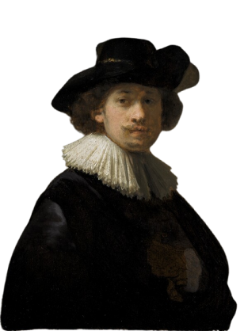

About Rembrandt
Renowned for his unparalleled mastery of light, shadow, and emotion,
Rembrandt van Rijn is one of the most revered painters in art history.
Born in 1606 in Leiden, Netherlands, Rembrandt's artistic journey took
him through triumph and tragedy, shaping his unique style and vision.

Rembrandt's artistry is characterized by his ability to capture the human
experience with unparalleled depth and sensitivity. From intimate
portraits to grand historical scenes, each of his works tells a story, inviting
viewers to immerse themselves in the narrative.
Despite facing personal hardships and financial struggles, Rembrandt's
artistic legacy endures, inspiring generations of artists and art
enthusiasts. His innovative use of light and shadow, known as
chiaroscuro, revolutionized the art world and continues to captivate
audiences today.
Join us on a journey through the life and work of Rembrandt van
Rijn. Explore his masterpieces, uncover the stories behind the
paintings, and immerse yourself in the world of this legendary artist.
